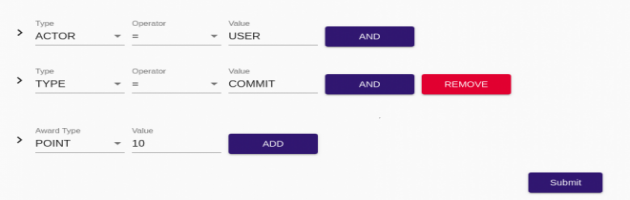

Rules should be configured in Activity Stream 2.0 format.
So, it is mandatory for an issuer to be aware about Activity Stream 2.0 standards.
For more information about it, please visit: https://www.w3.org/TR/activitystreams-core/
If you want to add rule which is as follows~
You can configure as follows:
